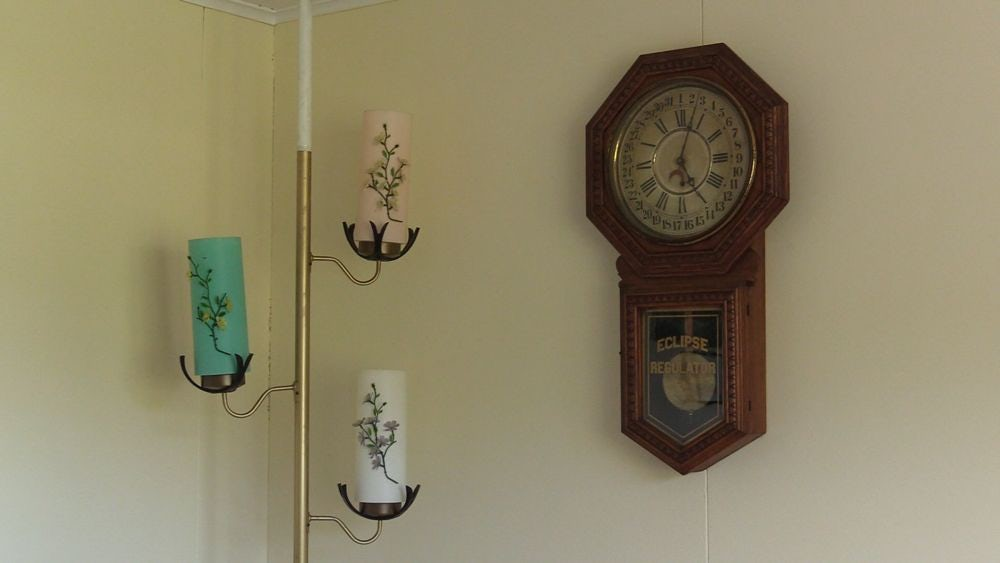

(ERASED)

Monique Moumblow, John’s Death (erased), still, 2019, video installation, sound. Courtesy of the artist.
Frames are progressively removed from three videos by Monique Moumblow until nothing remains.
Role
I developed software that removes a proportional quantity of frames on each playthrough of a looping video. The selection of frames varies from one iteration of the cycle to the next, so that each cycle is distinct.
Tools
Max, GLSL
Exhibitions
2019
Compositions | Pale Shadows, Centre Vox, Montreal, QC